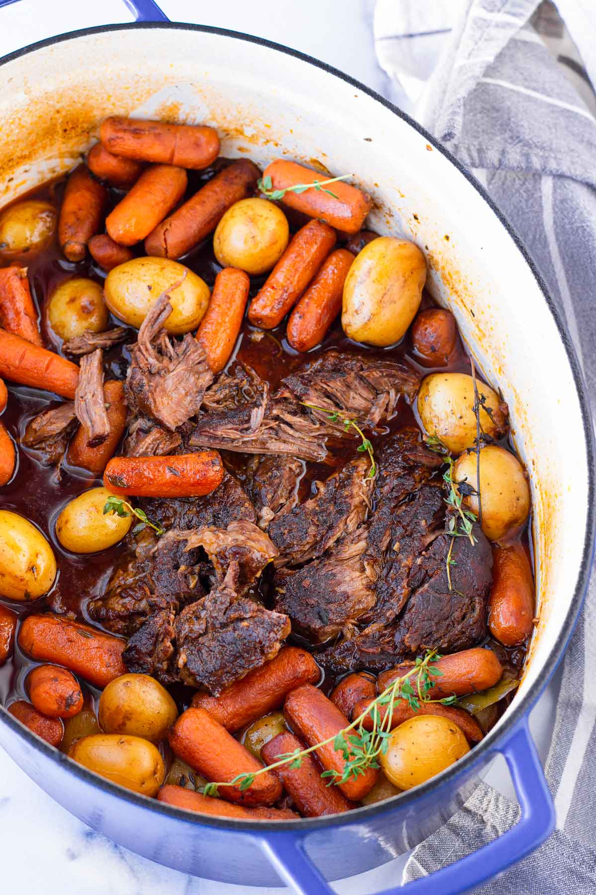

Delicious Pot Roast Recipe

Description:
It's that time of year when I pull out my large 8-quart Dutch oven to make cozy one pot meals. I recently made a Dutch oven roast chicken and
I've also been making this hearty beef stew a lot. Every meal around here is so delicio
Today I am sharing an amazing Dutch oven pot roast recipe.I've tested it over and over again until I got the flavors and consistency just right. I
promise you will absolutely love it. The meat is so tender and just falls apart beautifully. It's also full of so many deep and rich flavors - it's
unreal. You'll also love that it's the perfect one pot meal that makes clean-up super easy!
Ingredients:
- 3 pounds of boneless chuck roast
- 1 1/2 teaspoons of Kosher salt, plus more to taste.
- 1 tsp of black pepper.
- Olive oil.
- 2 large yellow onion. Peeled and sliced.
- 2 tsp of tomato paste.
- 6 cloves of minced garlic.
- 1 cup of red wine.(beef broth can be used as a substitute.
- 2 to 3 cups of beef broth, plus more if needed.
- 2 tsp Worcestershire sauce.
- 4 srigs of fresh thyme.
- 2 sprigs of fresh rosemary.
- 2 bay leaves, dried.
- 1 pound of baby carrots.
- 1 1/2 pound of baby yellow potatoes.
- Chopped Italian parsley for garnish.
Steps:
- Preheat oven to 300 degrees F.
- Generously season the meat with about 1 1/2 teaspoons Kosher salt and 1 teaspoon ground black pepper on all sides.
- Heat about 2 tablespoons of olive oil in a large 7-8 quart Dutch oven pot over medium-high heat. Sear on each side until golden brown,
about 5-6 minutes per side. Remove from the pot and set aside. Do not wipe the Dutch oven clean.
Tip: Let the meat sear undisturbed on both sides, and only flip once a nice golden brown crust has developed. There's no need to sear the edges,
but you can.
- Reduce to medium heat. Add the onions and saute until they start to brown, about 3 minutes, scraping the bottom and sides of the pot to deglaze
with the moisture from the onions. If the brown bits are burning too fast, add a few splashes of broth and deglaze. Stir minced garlic cook for
another 1 minute until fragrant. Tip: use a wooden spoon to avoid scratching the cast iron surface.
- Add the red wine (or substitute with beef broth), and quickly deglaze the brown bits from the bottom and sides of the pot for a few seconds.
Then, add 2 cups of the beef broth, Worcestershire sauce, tomato paste, fresh thyme sprigs, fresh rosemary rosemary sprigs, and bay leaves.
Stir until evenly combined and bring to a low boil.
- eturn the seared meat back to the pot, along with its juices. The liquid should cover about half of the meat – if not, add more beef broth as needed.
Cover securely with the lid and bake for 1.5 hours at 300 degrees F.
- Remove from oven and add the baby carrots and potatoes. At this point, you can also adjust seasoning with salt and pepper. Return to oven
(with the lid on), and cook for 2 hours more or until the meat is fork tender and falls apart, and until the vegetables are tender. If you want it
to be even more tender, cook for another 15-30 minutes.
- If desired, garnish with parsley. To serve, you can transfer to a large platter to serve it straight from the Dutch oven. Enjoy!